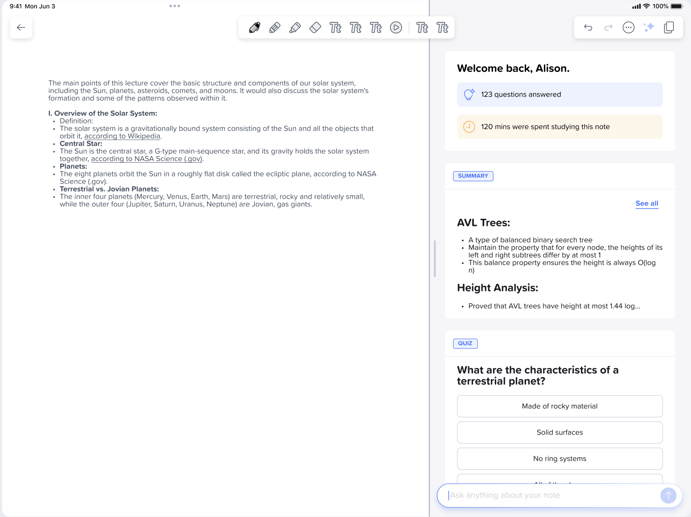
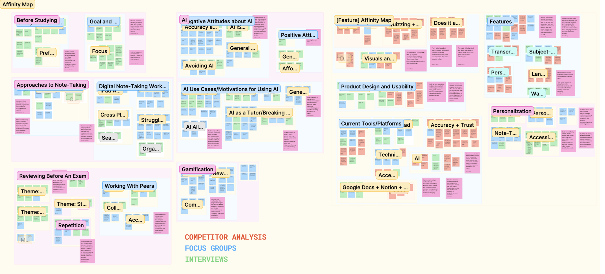
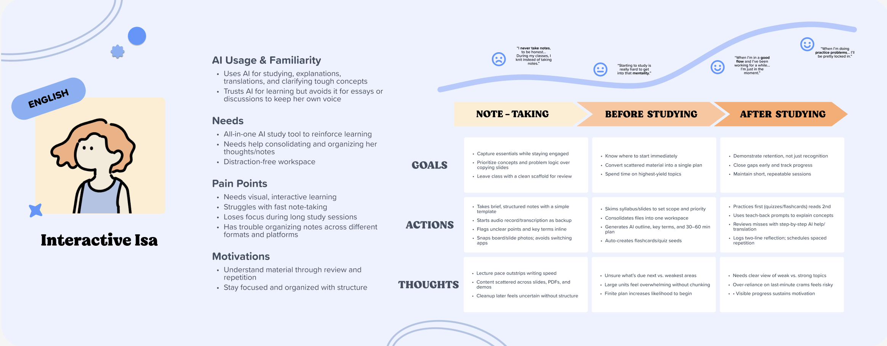
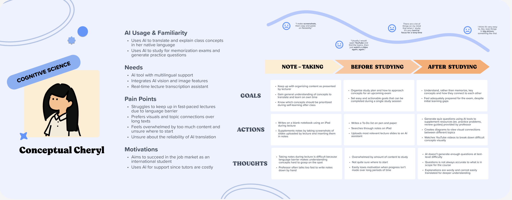
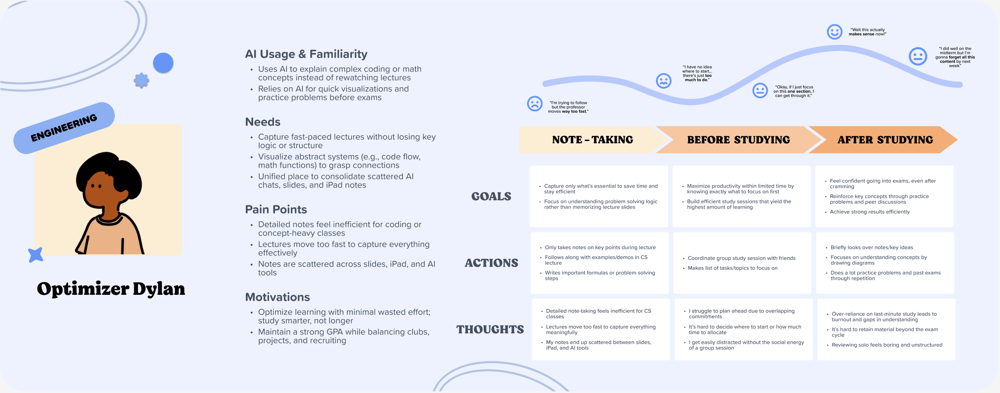
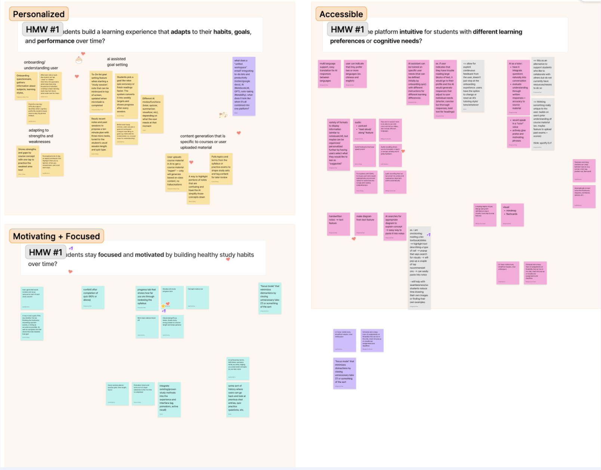
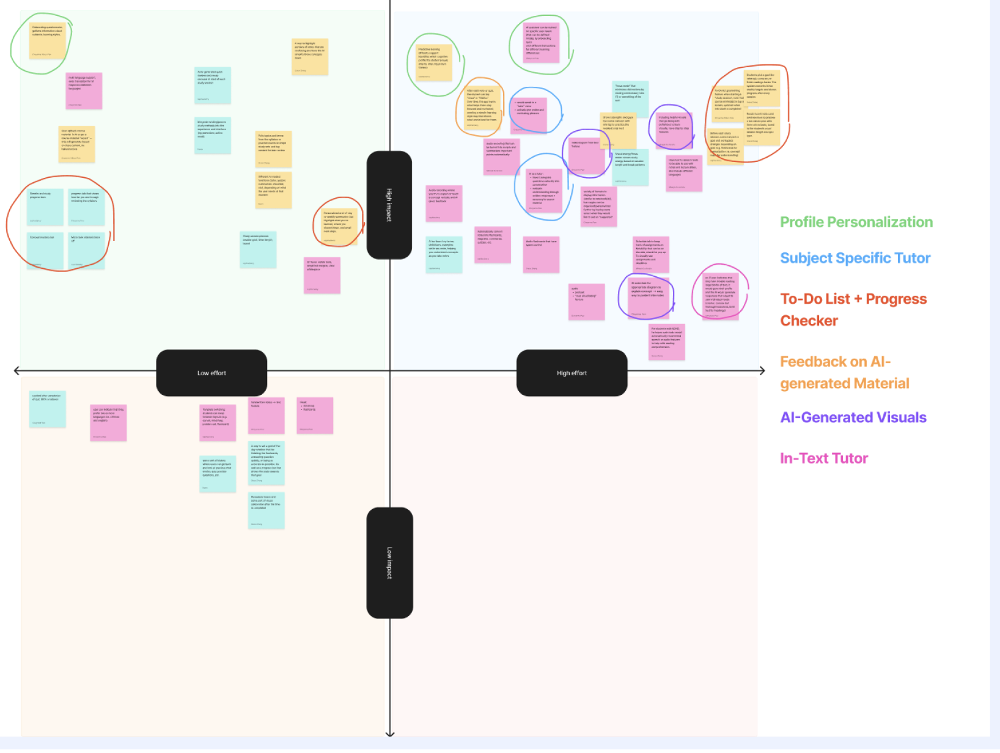

Reimagining AI-assisted learning support with Notability Learn
Context
Notability is an education technology product focused on digital note-taking and study
support. Our project explored how Notability Learn could better support personalized,
accessible studying.
Many students struggle to make digital study tools fit the way they actually learn.
Study platforms can be powerful, but they often feel one-size-fits-all. Students with
different learning styles, attention patterns, and accessibility needs may need clearer
structure, smaller goals, and more adaptable support.
The Reality
Studying is rarely linear, and motivation changes from session to session.
Students often move between notes, quizzes, summaries, reminders, and outside resources.
Without a clear plan, this can create friction before the actual studying begins.
Introducing Notability Learn
Notability Learn
Learn is Notability’s AI study tool aimed at helping students summarize and study their
note content through smart notes, summaries, live transcripts, quizzes, and chatbot
support.

Our How Might We Statement:
How might we evolve Learn to create a personalized and accessible learning experience that
keeps students motivated and focused?
Research
We identified three research goals:
Hone in on learning differences and how digital tools can support pain points.
Analyze the current competitor landscape within educational products and AI integration.
Understand what creates an engaging digital learning experience.
Our Chosen Research Methods
Secondary Research
Understand our target audience, especially users with learning differences.
Competitor Analysis
Research existing features to improve and identify Notability’s market advantage.
User Interviews
Understand how students with learning differences study and how digital tools can
better support their workflow.
User Insights Survey
Gain an overview of broader AI usage trends within a general student population.
Diary Study
Understand how users use Notability’s Learn feature over a period of time.
Focus Groups
Explore differing student experiences and diverse study workflows, then ideate
features for an ideal study tool.
Synthesis
From our synthesis, we drew three main insights.

Students manage cognitive overload better when work is broken into small, visible steps.
Students stay motivated by clear progress tracking and simple, social rewards.
Students value AI that adapts to their learning styles and weaknesses, offering tailored
explanations and formats that enhance understanding.
We created three user personas based on different product use cases.




Crazy 8 Ideation
Focused feature ideation on exact user pain points.
We organized features that students shared in focus groups, then brainstormed additions
to those features.
Impact-Effort Matrix
We used an impact-effort matrix to decide which features to focus on in our final prototype.

Prototyping and Solutions
A personalized Notability experience tailored to your needs.
Profile Personalization supports Notability Learn around each student using an onboarding
quiz that collects data on learning styles, challenges, and language preferences.
All of your study preferences, easily accessable.
Notability learns what works best for each individual student, because every student has
their own optimal needs.
Start a Study Session, customizable for your preferences using AI suggestions.
Study Session Components
Type in any goal, and have AI transform it into actionable microtasks.
Have AI turn your jotted down to do list of goals into smaller tasks that will help you
master your subjects.
Stay focused using an in-app timer.
Set a Pomodoro timer within Notability and enable an optional Focus Mode to turn off
potentially distracting notifications from other apps.
Takeaways
Communication Drives Strong UX
Drive alignment across product, engineering, marketing, and stakeholders by translating
UX research and frameworks into clear, actionable insights that non-design partners can
easily understand and act on.
Contextualize findings by clearly articulating the why behind decisions, connecting user
needs to product strategy to build trust and strengthen cross-functional collaboration.
Present research outputs in structured, digestible formats to increase stakeholder buy-in
early and minimize misalignment, rework, and downstream friction.
Consistency Builds Trust
Leverage design systems to establish consistent patterns across screens, components, and
interactions, reducing cognitive load and improving overall usability.
Implement reusable components and standardized UI patterns to accelerate development,
streamline collaboration between design and engineering, and enable scalable product growth.
Reinforce familiar interaction models to help users build confidence quickly, creating
more intuitive navigation and reducing the learning curve across the product.
Simplicity Enhances Experience
Design with a strong information hierarchy to prioritize clarity, ensuring users can quickly
understand content and take action without unnecessary cognitive effort.
Streamline user flows by removing friction points and unnecessary steps, enabling faster
task completion and improving overall user efficiency.
Eliminate non-essential elements while incorporating subtle microinteractions to add clarity
and personality, enhancing the experience without introducing distraction or complexity.